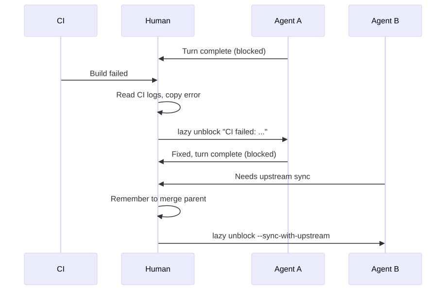
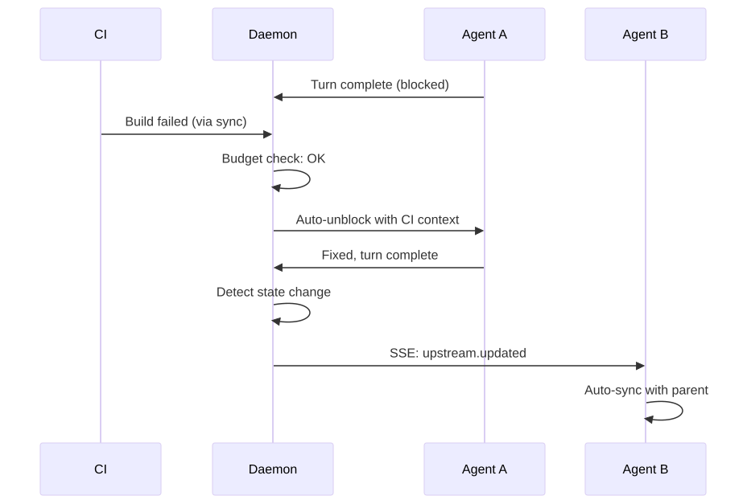
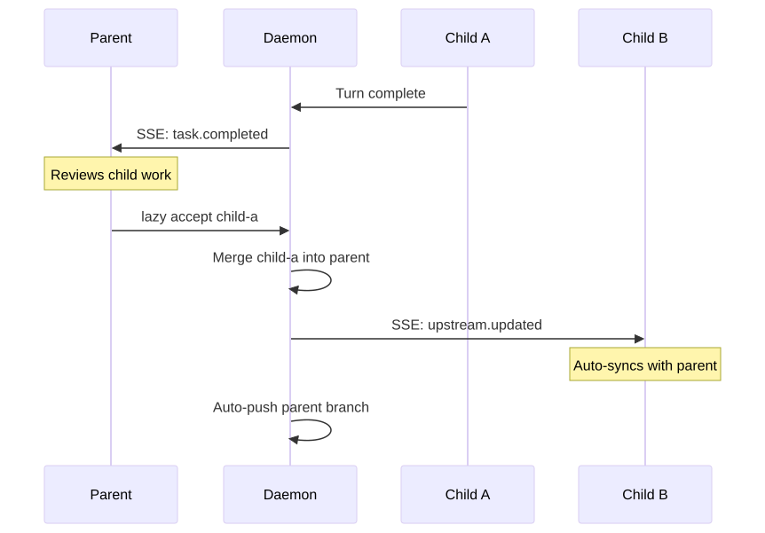

marp: true theme: default paginate: true title: Lazy v0.11 — The Daemon Release style: | section { font-family: -apple-system, BlinkMacSystemFont, 'Segoe UI', Roboto, sans-serif; } h1 { color: #1a1a2e; } h2 { color: #16213e; } .columns { display: grid; grid-template-columns: 1fr 1fr; gap: 1rem; } .before { color: #e74c3c; } .after { color: #27ae60; } code { font-size: 0.85em; } img { max-width: 100%; max-height: 80%; object-fit: contain;
#}
#Lazy v0.11 — The Daemon Release
The daemon becomes the central nervous system.
Agents, CLI, web dashboard, and git remotes all connect through the daemon. Tasks advance themselves in response to real-world signals.
March 2026
#The problem: manual relay
Before v0.11, humans were the message bus.
- CI fails — you notice, copy the error, run
lazy unblockwith context - PR gets a comment — you read it, relay it to the agent manually
- Child task finishes — you remember to unblock the parent
- Branch drifts — you notice conflicts late, spend time resolving them
- No visibility —
lazy listin terminal is the only window into the system
Every signal required a human in the loop. Agents sat blocked, waiting.
#Before v0.11: Human as message bus

Every arrow through "Human" is latency and context-switching cost.
#After v0.11: Daemon as nervous system

The daemon routes signals. Humans review results.
#Architecture

One daemon process. Five responsibilities. Zero manual relay.
#Web dashboard
The daemon serves a web UI at http://localhost:26024.
- Task list with status, agent, and timing
- Task detail with turns, commits, and diffs
- Full-text search across tasks
- Real-time updates
Dual-bind architecture:
- Unix socket — CLI and agent RPC (token-authenticated)
- TCP port — browser access (localhost only, no auth needed)
[server]
port = 26024
#MCP proxy for agents
Containerized agents access lazy tools through the daemon.
Before: Each builder session spun up its own TCP server. Port management, config files, separate auth.
After:
One daemon endpoint. Agents connect via HTTP tunnel (host.docker.internal:26024). Task-scoped — agents can only access their own worktree.
The builder server pattern is subsumed. No per-session servers, no port dance.
#Auto-push branches
Task branches push to remote automatically after state changes.
Before:
- Run
lazy accept - Remember to push
- Or wait for periodic sync
- Branch drift accumulates
After:
- Run
lazy accept - Daemon auto-pushes immediately
- Serialized queue, retry on failure
- Remote always in sync
Enabled by default. No configuration needed.
#Event routing
Real-time event flow through the task graph.

Events cascade. Blocked tasks auto-unblock. Working tasks get SSE.
#Auto-react: CI failures

The agent gets: job name, failure reason, log excerpt, and link to the CI run. No human copy-paste. No context lost in translation.
#Auto-react: PR comments
When a human comments on a task's pull request:
- Daemon detects new comment during sync
- Deduplicates against previously seen comment IDs
- Checks auto-react budget
- Auto-unblocks the task with comment content
The agent gets another turn to address the feedback — no manual relay needed.
Works with both GitHub and GitLab.
#Safety: circuit breakers
Auto-reactions are powerful but need guardrails.
| Control | Default | Purpose |
|---|---|---|
auto_react |
true |
Master switch |
auto_react_max_retries |
3 |
Per-task limit per trigger type |
auto_react_backoff |
exponential |
Delay between retries |
auto_react_daily_budget |
50 |
Project-wide daily turn limit |
Escalation path:
- First failure → auto-unblock immediately
- Second failure → backoff delay, then auto-unblock
- Third failure → task paused, human notified
- Daily budget hit → all auto-reactions paused project-wide
Counters reset on manual unblock.
#Terminal: lazy watch
# Watch a specific task's agent session (read-only)
lazy watch fix-auth
# Watch the only running task
lazy watch
- Attaches to the agent's tmux session in read-only mode
- See exactly what the agent is doing, without interfering
- Terminal windows auto-named: "lazy builder", "lazy pair"
- Requires tmux
#Default watchdog timeout
Agents now have a 2-hour watchdog by default.
If an agent produces no output for 2 hours, it's killed (SIGTERM, then SIGKILL after 5s grace).
Previously: watchdog was disabled. Hung agents ran forever.
[agent]
watchdog_output_timeout_ms = 7200000 # 2 hours (default)
watchdog_output_timeout_ms = 0 # Disable (old behavior)
#Configuration summary
# Web dashboard
[server]
port = 26024
# Watchdog
[agent]
watchdog_output_timeout_ms = 7200000
# Auto-react controls
[daemon]
auto_react = true
auto_react_ci = true
auto_react_comments = true
auto_react_max_retries = 3
auto_react_backoff = "exponential"
auto_react_daily_budget = 50
All features work out of the box with sensible defaults.
#What's next
Deferred from v0.11, candidates for v0.12:
- Dockerfile onboarding — auto-detect project language and generate Dockerfile
lazy log— unified log viewer across tasks and daemon- Builder MCP migration — builders use daemon MCP endpoint directly
- Dashboard auth — token-based auth for remote dashboard access
- Event persistence — durable event log for audit and replay
#Summary
v0.11 makes lazy a self-advancing system.
| Before | After |
|---|---|
| Human relays CI errors | Daemon auto-reacts |
| Human syncs branches | Daemon auto-pushes |
| Human unblocks on events | Daemon auto-delivers |
| Terminal-only visibility | Web dashboard |
| No agent timeout | 2-hour default watchdog |
The daemon is the central nervous system. Agents respond to signals. Humans review results.